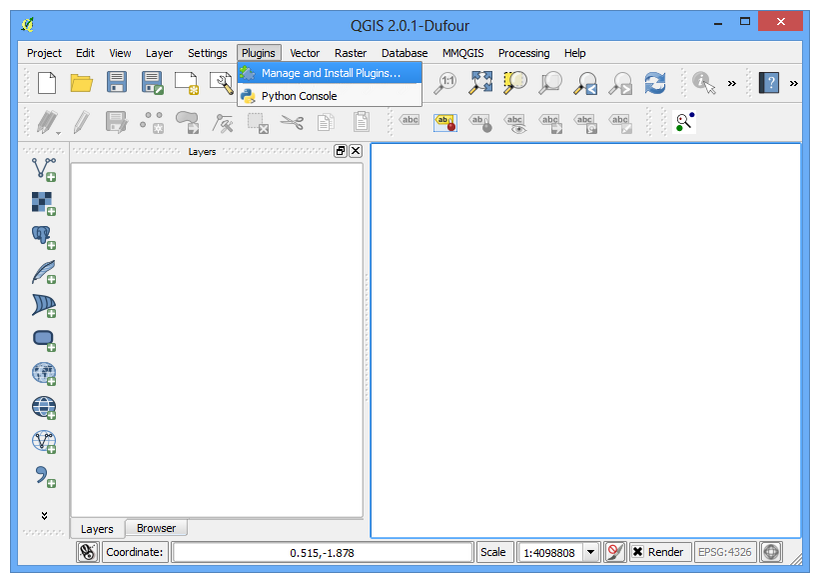
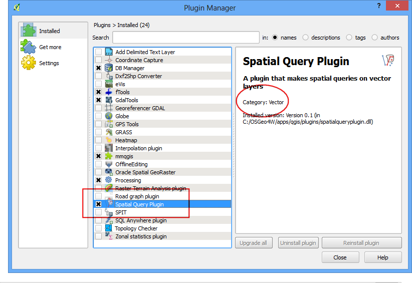
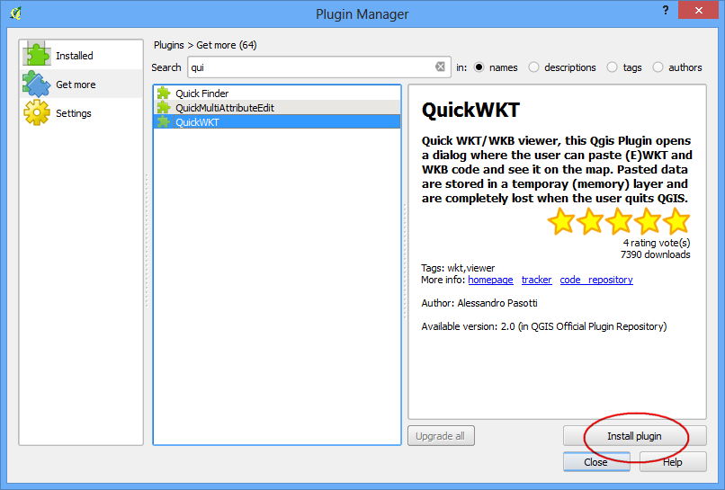

การใช้งาน Plugin
[ Download PDF
A4
Letter ]
Plugin ใน QGIS ช่วยให้ซอฟต์แวร์มีความสามารถมากขึ้น Plugin ต่างๆ ถูกเขียนขึ้นทั้งจากนักพัฒนาของ QGIS และนักพัฒนาจากภายนอกที่สนใจทำให้ QGIS มีความสามารถมากขึ้น ซึ่ง Plugin เหล่านี้ทุกคนสามารถนำไปใช้ได้
ภาพรวมของงาน
ในเอกสารนี้ คุณจะได้เรียนรู้การเปิดใช้งาน Core Plugins ดาวน์โหลดและติดตั้ง External Plugins อีกทั้งคุณจะได้รู้ว่าจะสามารถเรียกใช้ Plugin ที่ถูกติดตั้งไปแล้วใน QGIS ได้อย่างไร
ขั้นตอนการทำงาน
Core Plugins
Core plugin ถูกติดตั้งมาพร้อมกับตอนที่เราติดตั้ง QGIS วิธีใช้คุณจะต้องเปิดใช้งานมันเสียก่อน
จากนั้น เปิด QGIS คลิกที่เมนู เพื่อเปิดหน้าต่าง Plugin Manager

ถึงแม้ว่าคุณจะเปิดใช้ QGIS ครั้งแรก คุณจะเห็นได้ว่ามี plugin ต่างๆ มากมายอยู่ในแท็บ Installed นั่นเป็นเพราะ Core Plugins ได้ถูกติดตั้งมาพร้อมกับ QGIS แล้วนั่นเอง

เรามาลองเปิดใช้ plugin กันเถอะ โดยให้ติ๊กตรง Spatial Query Plugin จะเป็นการเปิดใช้งาน plugin และคุณจะสามารถใช้ในโปรแกรมได้ บางครั้งเราจะหาไม่เจอว่า plugin ที่เปิดใช้ไป จะไปอยู่เมนู, แถบด้านข้าง หรือ แถบเครื่องมือไหน มีสิ่งหนึ่งที่สามารถบอกได้คือ รายละเอียดของ plugin เช่น plugin นี้บอกมาว่า Category: Vector นั่นคือคุณสามารถรู้ได้ว่า plugin นี้อยู่ภายใต้เมนู Vector เมื่อเปิดใช้งาน plugin แล้ว ให้กดปุ่ม Close เพื่อปิดหน้าต่างนี้

ตอนนี้ plugin Spatial Query Plugin ได้ถูกเปิดใช้แล้ว คุณสามารถใช้งานได้ที่เมนู

Plugin จากนักพัฒนาภายนอก
Plugin จากนักพัฒนาภายนอก จะอยู่ใน QGIS Plugins Repository และคุณต้องติดตั้งด้วยตัวเองก่อนจะใช้งานได้ วิธีที่ง่ายที่สุดในการค้นหาและติดตั้ง plugin เหล่านี้คือ ใช้ Plugin Manager
จากนั้น เปิด QGIS คลิกที่เมนู เพื่อเปิดหน้าต่าง Plugin Manager

คลิกที่แท็บ Get more ตรงนี้คุณจะเห็นรายการของ plugin ทั้งหมด

สำหรับเอกสารนี้ เรามาติดตั้ง plugin ที่ชื่อ ‘QuickQKT’ กัน โดยเมื่อคุณเริ่มพิมพ์คำว่า qui ลงในกล่องค้นหา search คุณจะเห็นผลลัพธ์ด้านล่าง คลิกที่ QuickWKT ถัดมา ให้คลิกที่ปุ่ม Install plugin เพื่อติดตั้ง

เมื่อ plugin ถูกดาวน์โหลดและติดตั้งเสร็จแล้ว คุณจะเห็นหน้าต่างให้ยืนยันว่าได้ติดตั้งไปแล้วนะ

คุณอาจสังเกตุเห็นว่าในรายละเอียดของ plugin ไม่ได้มีบอกไว้ว่าอยู่ในหมวดหมู่ไหน ซึ่งทำให้ยากในการที่จะใช้ในครั้งแรกเพราะหาไม่เจอ plugin เหล่านี้ส่วนใหญ่จะถูกติดตั้งอยู่ภายใต้เมนู Plugins ใน QGIS ให้คลิกที่เมนู ซึ่งคุณจะเห็นได้ว่า มันมาอยู่ตรงนี้นี่เอง และบ่อยครั้งที่ plugin เหล่านี้ก็จะแอบมีปุ่มไว้ที่แถบเครื่องมือ Plugins เช่นกัน คุณอาจจะใช้ปุ่มเหล่านั้นได้เช่นกันสำหรับการใช้ plugin

Plugin ที่ยังอยู่ในสถานะขั้นทดลอง
ตอนนี้คุณได้รู้วิธีติดตั้ง External Plugin ใน QGIS แล้ว เรามาดูตัวเลือกขั้นสูงกัน ในบางครั้งคุณมองหา plugin ที่จำเพาะเจาะ แต่ก็หาไม่เจอในแท็บ Get more นั่นอาจเพราะ plugin เหล่านั้นยังเป็น Experimental อยู่ และนี่คือการติดตั้ง experimental plugin
เปิด Plugin Manager จากเมนู คลิกเลือกที่แท็บ Settings คุณจะเห็นตัวเลือกที่ชื่อ Show also experimental plugins คลิกเลือกที่ช่องนั้นเพื่อเปิดใช้

คุณจะเห็นแท็บใหม่ชื่อ New ซึ่งตอนนี้ plugin ที่อยู่ในขั้นทดลองจะปรากฏขึ้น
Note
แท็บ New จะปรากฏชั่วคราวเท่านั้นที่คุณเปิดใช้ ครั้งหน้าที่คุณเปิด Plugin Manager plugin เหล่านี้จะปรากฏควบคู่ไปกับ plugin ปกติในแท็บ Get more

เรามาลองติดตั้ง plugin ชื่อ TimeManager กัน โดยคลิกที่ชื่อของ plugin และคลิกที่ปุ่ม Install

ตอนนี้เมื่อคุณกลับมาที่หน้าต่างหลัก QGIS คุณจะเห็น Panel ใหม่ด้านล่างของตัวโปรแกรม พาเนลนี้สร้างขึ้นมาโดย plugin TimeManager นี่เป็นหนึ่งในสิ่งที่ plugin ทำได้ ในการทำให้โปรแกรมเก่งขึ้นและมีส่วนติดต่อให้ผู้ใช้ได้ใช้งานได้ง่าย

คุณสามารถ เปิด/ปิด พาเนลนี้ได้จากเมนู